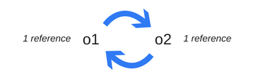

<!DOCTYPE html><html><head><meta charset="utf-8"><title>JavaScript中的内存管理 | 技术学派</title><meta name="viewport" content="width=device-width,initial-scale=1,maximum-scale=1"><meta name="keywords" content="IT培训, Python, 大数据, 人工智能, Web前端, PHP, "><meta name="description" content="JavaScript中的内存管理参考资料：https://developer.mozilla.org/en-US/docs/Web/JavaScript/Memory_Management本文将会讨论内存及JavaScript中的内存管理方式，方便大家在使用JavaScript编码时，更好的应对内存泄漏带来的问题。什么是内存？内存(Memory)也被称为内存储器，其作用是用于暂时存放CPU中的运算"><meta property="og:type" content="article"><meta property="og:title" content="JavaScript中的内存管理"><meta property="og:url" content="http://www.JiShuXuePai.com/blog/js/JavaScript中的内存管理/index.html"><meta property="og:site_name" content="技术学派"><meta property="og:description" content="JavaScript中的内存管理参考资料：https://developer.mozilla.org/en-US/docs/Web/JavaScript/Memory_Management本文将会讨论内存及JavaScript中的内存管理方式，方便大家在使用JavaScript编码时，更好的应对内存泄漏带来的问题。什么是内存？内存(Memory)也被称为内存储器，其作用是用于暂时存放CPU中的运算"><meta property="og:locale" content="zh-CN"><meta property="og:image" content="http://www.jishuxuepai.com/blog/js/JavaScript中的内存管理/01.png"><meta property="og:updated_time" content="2018-05-11T08:14:13.266Z"><meta name="twitter:card" content="summary"><meta name="twitter:title" content="JavaScript中的内存管理"><meta name="twitter:description" content="JavaScript中的内存管理参考资料：https://developer.mozilla.org/en-US/docs/Web/JavaScript/Memory_Management本文将会讨论内存及JavaScript中的内存管理方式，方便大家在使用JavaScript编码时，更好的应对内存泄漏带来的问题。什么是内存？内存(Memory)也被称为内存储器，其作用是用于暂时存放CPU中的运算"><meta name="twitter:image" content="http://www.jishuxuepai.com/blog/js/JavaScript中的内存管理/01.png"><link rel="stylesheet" href="/libs/bootstrap/bootstrap-grid.css"><link rel="stylesheet" href="/libs/font-awesome/css/font-awesome.min.css"><link rel="stylesheet" href="/libs/titillium-web/styles.css"><link rel="stylesheet" href="/libs/source-code-pro/styles.css"><link rel="stylesheet" href="/css/style.css"><script src="/libs/jquery/jquery.min.js"></script><link rel="stylesheet" href="/libs/lightgallery/css/lightgallery.min.css"><link rel="stylesheet" href="/libs/justified-gallery/justifiedGallery.min.css"><script>var _hmt=_hmt||[];!function(){var e=document.createElement("script");e.src="//hm.baidu.com/hm.js?4c1bd812de3c30edbaa2b803c66f0a04";var t=document.getElementsByTagName("script")[0];t.parentNode.insertBefore(e,t)}()</script></head></html><body><div id="wrap"><header id="header"><div id="header-outer" class="outer"><div class="container"><div class="container-inner"><div id="header-title"><h1 class="logo-wrap"><a href="/" class="logo"></a></h1></div><div id="header-inner" class="nav-container"><a id="main-nav-toggle" class="nav-icon fa fa-bars">菜单</a><div class="nav-container-inner"><ul id="main-nav"><li class="main-nav-list-item"><a class="main-nav-list-link" href="/">主页</a></li><li class="main-nav-list-item"><a class="main-nav-list-link" href="/edu/index.html">学编程</a></li><li class="main-nav-list-item"><a class="main-nav-list-link" href="/blog/">博客</a></li><li class="main-nav-list-item"><a class="main-nav-list-link" href="/nav.html">网站导航</a></li><li class="main-nav-list-item"><a class="main-nav-list-link" href="/tips.html">学习建议</a></li><li class="main-nav-list-item"><a class="main-nav-list-link" href="/about.html">关于</a></li></ul><nav id="sub-nav"><div id="search-form-wrap"><form class="search-form"><input type="text" class="ins-search-input search-form-input" placeholder="搜索"> <button type="submit" class="search-form-submit"></button></form><div class="ins-search"><div class="ins-search-mask"></div><div class="ins-search-container"><div class="ins-input-wrapper"><input type="text" class="ins-search-input" placeholder="想要查找什么..."> <span class="ins-close ins-selectable"><i class="fa fa-times-circle"></i></span></div><div class="ins-section-wrapper"><div class="ins-section-container"></div></div></div></div><script>window.INSIGHT_CONFIG={TRANSLATION:{POSTS:"文章",PAGES:"页面",CATEGORIES:"分类",TAGS:"标签",UNTITLED:"(未命名)"},ROOT_URL:"/",CONTENT_URL:"/content.json"}</script><script src="/js/insight.js"></script></div></nav></div></div></div></div></div></header><div class="container"><div class="main-body container-inner"><div class="main-body-inner"><section id="main"><div class="main-body-header"><h1 class="header"><a class="page-title-link" href="/categories/js/">js</a><div class="author">冯晓迎</div></h1></div><div class="main-body-content"><article id="post-JavaScript中的内存管理" class="article article-single article-type-post" itemscope itemprop="blogPost"><div class="article-inner"><header class="article-header"><h1 class="article-title" itemprop="name">JavaScript中的内存管理</h1></header><div class="article-meta"><div class="article-date"><a href="/blog/js/JavaScript中的内存管理/" class="article-date"><time datetime="2018-05-11T08:14:13.266Z" itemprop="datePublished">2018-05-11</time></a></div></div><div class="article-entry" itemprop="articleBody"><h1 id="JavaScript中的内存管理"><a href="#JavaScript中的内存管理" class="headerlink" title="JavaScript中的内存管理"></a>JavaScript中的内存管理</h1><blockquote><p>参考资料：<a href="https://developer.mozilla.org/en-US/docs/Web/JavaScript/Memory_Management" target="_blank" rel="noopener">https://developer.mozilla.org/en-US/docs/Web/JavaScript/Memory_Management</a></p><p>本文将会讨论内存及JavaScript中的内存管理方式，方便大家在使用JavaScript编码时，更好的应对内存泄漏带来的问题。</p></blockquote><h2 id="什么是内存？"><a href="#什么是内存？" class="headerlink" title="什么是内存？"></a>什么是内存？</h2><p>内存(Memory)也被称为内存储器，其作用是用于暂时存放CPU中的运算数据，以及与硬盘等外部存储器交换的数据。只要计算机在运行中，CPU就会把需要运算的数据调到内存中进行运算，当运算完成后CPU再将结果传送出来，内存的运行也决定了计算机的稳定运行。因此从概念上讲，我们可以把整个计算机内存看作是我们可以读写的一大块空间。很多东西都存储在内存中：</p><ol><li>程序使用的所有变量和其他数据。</li><li>程序的代码，包括操作系统的代码。</li></ol><h2 id="内存的生命周期"><a href="#内存的生命周期" class="headerlink" title="内存的生命周期"></a>内存的生命周期</h2><p>无论你使用的是什么编程语言，内存生命周期几乎都是一样的：</p><p></p><p>以下是对内存生命周期中每个步骤发生的情况的概述：</p><h3 id="申请内存（内存分配）"><a href="#申请内存（内存分配）" class="headerlink" title="申请内存（内存分配）"></a>申请内存（内存分配）</h3><p>内存由操作系统分配，允许程序使用它。在简单的编程语言中，这个过程是开发人员应该处理的一个显式操作。然而，在高级编程语言中，系统会帮助你完成这个操作。</p><p>根据内存分配的方式分为了静态内存和动态内存，下表总结了静态和动态内存分配之间的区别：</p><p></p><ol><li>静态内存分配在编译时完成，不占用CPU资源; 动态内存分配在运行时，分配与释放都占用CPU资源。</li></ol><ol start="2"><li>静态内存在栈(stack)上分配; 动态内存在堆(heap)上分配。</li></ol><ol start="3"><li><p>动态内存分配需要指针和引用类型支持，静态不需要。</p></li><li><p>静态内存分配是按计划分配，由编译器负责; 动态内存分配是按需分配，由程序员负责。</p><p>​</p></li></ol><h3 id="使用内存"><a href="#使用内存" class="headerlink" title="使用内存"></a>使用内存</h3><p>这是程序使用之前申请内存的时间段，你的代码会通过使用分配的变量来对内存进行读取和写入操作。</p><p><strong>栈内存</strong>：在函数中定义的一些基本类型的变量和对象的引用变量都是在函数的栈内存中分配。当在一段代码块中定义一个变量时，系统就在栈中为这个变量分配内存空间，当超过变量的作用域后，系统会自动释放掉为该变量分配的内存空间，该内存空间可以立刻被另作他用。</p><p><strong>堆内存</strong>：堆内存用于存放由new创建的对象和数组。在堆中分配的内存，由虚拟机自动垃圾回收器来管理。在堆中产生了一个数组或者对象后，还可以在栈中定义一个特殊的变量，这个变量的取值等于数组或者对象在堆内存中的首地址，在栈中的这个特殊的变量就变成了数组或者对象的引用变量，以后就可以在程序中使用栈内存中的引用变量来访问堆中的数组或者对象，引用变量相当于为数组或者对象起的一个别名，或者代号。</p><p>引用变量是普通变量，定义时在栈中分配内存，引用变量在程序运行到作用域外释放。而数组＆对象本身在堆中分配，即使程序运行到使用new产生数组和对象的语句所在地代码块之外，数组和对象本身占用的堆内存也不会被释放，数组和对象在没有引用变量指向它的时候，才变成垃圾，不能再被使用，但是仍然占着内存，在随后的一个不确定的时间被垃圾回收器释放掉。</p><h3 id="释放内存"><a href="#释放内存" class="headerlink" title="释放内存"></a>释放内存</h3><p>对于不再需要的内存进行释放的操作，以便确保其变成空闲状态并且可以被再次使用。与分配内存操作一样，这个操作在简单的编程语言中是需要显示操作的。</p><h2 id="JavaScript的内存管理"><a href="#JavaScript的内存管理" class="headerlink" title="JavaScript的内存管理"></a>JavaScript的内存管理</h2><p>JavaScript是所谓的垃圾回收语言之一。垃圾回收语言，通过定期检查哪些事先被分配的内存块仍然可以被应用的其他部分“访问”到，来帮助开发者管理内存。换句话说，垃圾回收语言从“哪些内存是仍然被需要的？”到“哪些内存是仍然可以被应用的其他部分访问到的”减少了管理内存的问题。差异很微妙，但是很重要：当只有开发者知道一块分配了的内存将来会被需要，访问不到的内存可以在算法上被决策并标记为系统回收内存。</p><p>以Google的V8引擎为例，在V8引擎中所有的JavaScript对象都是通过堆来进行内存分配的。当我们在代码中声明变量并赋值时，V8引擎就会在堆内存中分配一部分给这个变量。如果已申请的内存不足以存储这个变量时，V8引擎就会继续申请内存，直到堆的大小达到了V8引擎的内存上限为止（默认情况下，V8引擎的堆内存的大小上限在64位系统中为1464MB，在32位系统中则为732MB）。</p><p>另外，V8引擎对堆内存中的JAVASCRIPT对象进行分代管理。新生代：新生代即存活周期较短的JavaScript对象，如临时变量、字符串等；老生代：老生代则为经过多次垃圾回收仍然存活，存活周期较长的对象，如主控制器、服务器对象等。</p><h3 id="在JavaScript中分配内存"><a href="#在JavaScript中分配内存" class="headerlink" title="在JavaScript中分配内存"></a>在JavaScript中分配内存</h3><p><strong>值的初始化:</strong>在为变量赋值的时候，javascript会完成内存的分配工作。</p><figure class="highlight javascript"><table><tr><td class="gutter"><pre><span class="line">1</span><br><span class="line">2</span><br><span class="line">3</span><br><span class="line">4</span><br><span class="line">5</span><br><span class="line">6</span><br><span class="line">7</span><br><span class="line">8</span><br><span class="line">9</span><br><span class="line">10</span><br><span class="line">11</span><br><span class="line">12</span><br><span class="line">13</span><br><span class="line">14</span><br><span class="line">15</span><br><span class="line">16</span><br><span class="line">17</span><br><span class="line">18</span><br></pre></td><td class="code"><pre><span class="line"><span class="keyword">var</span> n = <span class="number">254</span>; <span class="comment">// 为数字分配内存</span></span><br><span class="line"></span><br><span class="line"><span class="keyword">var</span> s = <span class="string">'sessionstack'</span>; <span class="comment">// 为字符串分配内存</span></span><br><span class="line"></span><br><span class="line"><span class="keyword">var</span> o = &#123;</span><br><span class="line">  a: <span class="number">12</span>,</span><br><span class="line">  b: <span class="literal">null</span></span><br><span class="line">&#125;; <span class="comment">// 为对象及其包含的值分配内存</span></span><br><span class="line"></span><br><span class="line"><span class="keyword">var</span> a = [<span class="number">1</span>, <span class="literal">null</span>, <span class="string">'str'</span>];  <span class="comment">//（类似对象）为数组及其包含的值分配内存。 </span></span><br><span class="line"></span><br><span class="line"><span class="function"><span class="keyword">function</span> <span class="title">f</span>(<span class="params">a</span>) </span>&#123;</span><br><span class="line">  <span class="keyword">return</span> a + <span class="number">3</span>;</span><br><span class="line">&#125;<span class="comment">// 为函数分配内存（函数是可调用的对象）</span></span><br><span class="line"></span><br><span class="line">someElement.addEventListener(<span class="string">'click'</span>, <span class="function"><span class="keyword">function</span>(<span class="params"></span>)</span>&#123;</span><br><span class="line">  someElement.style.backgroundColor = <span class="string">'blue'</span>;</span><br><span class="line">&#125;, <span class="literal">false</span>);<span class="comment">// 函数表达式同样也是对象，存在分配内存的情况</span></span><br></pre></td></tr></table></figure><p><strong>通过函数调用完成分配:</strong>一些函数调用也会导致对象分配：</p><figure class="highlight javascript"><table><tr><td class="gutter"><pre><span class="line">1</span><br><span class="line">2</span><br></pre></td><td class="code"><pre><span class="line"><span class="keyword">var</span> d = <span class="keyword">new</span> <span class="built_in">Date</span>(); <span class="comment">// 分配日期对象</span></span><br><span class="line"><span class="keyword">var</span> e = <span class="built_in">document</span>.createElement(<span class="string">'div'</span>); <span class="comment">// 分配DOM元素</span></span><br></pre></td></tr></table></figure><p>一些方法会分配新值或者对象：</p><figure class="highlight javascript"><table><tr><td class="gutter"><pre><span class="line">1</span><br><span class="line">2</span><br><span class="line">3</span><br><span class="line">4</span><br><span class="line">5</span><br><span class="line">6</span><br><span class="line">7</span><br><span class="line">8</span><br></pre></td><td class="code"><pre><span class="line"><span class="keyword">var</span> s1 = <span class="string">'sessionstack'</span>;</span><br><span class="line"><span class="keyword">var</span> s2 = s1.substr(<span class="number">0</span>, <span class="number">3</span>); </span><br><span class="line"><span class="comment">// S2是一个新字符串，因为字符串是不可变的，javascript会为[0, 3]范围的内容创建一个新的字符串。</span></span><br><span class="line"> </span><br><span class="line"><span class="keyword">var</span> a1 = [<span class="string">'str1'</span>, <span class="string">'str2'</span>];</span><br><span class="line"><span class="keyword">var</span> a2 = [<span class="string">'str3'</span>, <span class="string">'str4'</span>];</span><br><span class="line"><span class="keyword">var</span> a3 = a1.concat(a2);</span><br><span class="line"><span class="comment">//a3是具有4个元素的新数组是a1和a2元素的合并</span></span><br></pre></td></tr></table></figure><h3 id="在JavaScript中使用内存"><a href="#在JavaScript中使用内存" class="headerlink" title="在JavaScript中使用内存"></a>在JavaScript中使用内存</h3><p>基本上在JavaScript中使用分配的内存，意味着在其中读写。这可以通过读取或写入变量或对象属性的值，或者甚至将参数传递给函数来完成。</p><h3 id="在JavaScript中释放内存"><a href="#在JavaScript中释放内存" class="headerlink" title="在JavaScript中释放内存"></a>在JavaScript中释放内存</h3><p>大部分内存泄漏问题都是在这个阶段产生的，这个阶段最难的问题就是确定何时不再需要已分配的内存。它通常需要开发人员确定程序中的哪个部分不再需要这些内存，并将其释放。</p><p>高级语言嵌入了一个名为垃圾收集器的功能，其工作是跟踪内存分配和使用情况，以便在不再需要分配内存的情况下自动释放内存。</p><p>不幸的是，这个过程无法做到那么准确，因为像某些内存不再需要的问题是不能由算法来解决的。</p><p>大多数垃圾收集器通过收集不能被访问的内存来工作，例如指向它的变量超出范围的这种情况。然而，这种方式只能收集内存空间的近似值，因为在内存的某些位置可能仍然有指向它的变量，但它却不会被再次访问。</p><p>由于确定一些内存是否“不再需要”，是不可判定的，所以垃圾收集机制就有一定的局限性。下面将解释主要垃圾收集算法及其局限性的概念。</p><h4 id="内存引用"><a href="#内存引用" class="headerlink" title="内存引用"></a>内存引用</h4><p>垃圾收集算法所依赖的主要概念之一就是内存引用。</p><p>在内存管理情况下，如果一个对象访问变量（可以是隐含的或显式的），则称该对象引用另一个对象。例如，JavaScript对象具有对其原对象（隐式引用）及其属性值（显式引用）的引用。</p><p>在这种情况下，“对象”的概念超出了javascript传统意义上对象的概念，他还包括函数作用域和全局作用域。</p><h4 id="使用引用计数算法的垃圾回收"><a href="#使用引用计数算法的垃圾回收" class="headerlink" title="使用引用计数算法的垃圾回收"></a>使用引用计数算法的垃圾回收</h4><p>这是最简单的垃圾收集算法。引入了 “对象不再需要” 和 “没有其他对象引用该对象” 的概念。当该对象的引用指针变为0的时候，就认为他可以被回收。看看下面的代码：</p><figure class="highlight javascript"><table><tr><td class="gutter"><pre><span class="line">1</span><br><span class="line">2</span><br><span class="line">3</span><br><span class="line">4</span><br><span class="line">5</span><br><span class="line">6</span><br><span class="line">7</span><br><span class="line">8</span><br><span class="line">9</span><br><span class="line">10</span><br><span class="line">11</span><br><span class="line">12</span><br><span class="line">13</span><br><span class="line">14</span><br><span class="line">15</span><br><span class="line">16</span><br></pre></td><td class="code"><pre><span class="line"><span class="keyword">var</span> o1 = &#123;</span><br><span class="line">  o2: &#123;</span><br><span class="line">    x: <span class="number">1</span></span><br><span class="line">  &#125;</span><br><span class="line">&#125;; </span><br><span class="line"><span class="comment">// 两个对象被创建，'o1'包含'o2'对象的引用，没有垃圾可以收集。</span></span><br><span class="line"> </span><br><span class="line"><span class="keyword">var</span> o3 = o1; <span class="comment">//'o3'为'o1'对象的引用</span></span><br><span class="line">                                                      </span><br><span class="line">o1 = <span class="number">1</span>;      <span class="comment">//现在'o1'已经不是对象的引用，对象只有'o3'一个引用。</span></span><br><span class="line"></span><br><span class="line"><span class="keyword">var</span> o4 = o3.o2; <span class="comment">// 引用指向了对象的属性'o2'</span></span><br><span class="line"> </span><br><span class="line">o3 = <span class="string">'374'</span>; <span class="comment">// 现在对象有零个引用指向它，可以认为是“垃圾收集”， 然而，它的属性'o2'依然被'o4'指向，所以不能被释放。</span></span><br><span class="line"> </span><br><span class="line">o4 = <span class="literal">null</span>; <span class="comment">// 原本'o2'的引用已经取消，'o1' 对象有零个引用指向它，可以被回收。</span></span><br></pre></td></tr></table></figure><p><strong>循环引起对象无法释放:</strong>该算法有其局限性，当一个对象引用另外一个对象，当形成循环引用时，即时他们不再被需要了，垃圾收集器也不会回收他们。。例如下面的例子，创建两个对象并相互引用，这样会创建一个循环引用。在函数调用之后，它们将超出范围，所以它们实际上是无用的，可以被释放。然而，引用计数算法认为，由于两个对象中的每一个都被引用至少一次，所以两者都不能被垃圾收集机制收回。</p><figure class="highlight javascript"><table><tr><td class="gutter"><pre><span class="line">1</span><br><span class="line">2</span><br><span class="line">3</span><br><span class="line">4</span><br><span class="line">5</span><br><span class="line">6</span><br><span class="line">7</span><br><span class="line">8</span><br></pre></td><td class="code"><pre><span class="line"><span class="function"><span class="keyword">function</span> <span class="title">f</span>(<span class="params"></span>) </span>&#123;</span><br><span class="line">  <span class="keyword">var</span> o1 = &#123;&#125;;</span><br><span class="line">  <span class="keyword">var</span> o2 = &#123;&#125;;</span><br><span class="line">  o1.p = o2; <span class="comment">// o1 引用 o2</span></span><br><span class="line">  o2.p = o1; <span class="comment">// o2 引用 o1，这创造了一个循环。</span></span><br><span class="line">&#125;</span><br><span class="line"></span><br><span class="line">f();</span><br></pre></td></tr></table></figure><p></p><p><strong>现实中的例子:</strong>ie6、7中，在dom对象上使用引用计数的算法，这里会存在内存泄露的问题。</p><figure class="highlight javascript"><table><tr><td class="gutter"><pre><span class="line">1</span><br><span class="line">2</span><br><span class="line">3</span><br><span class="line">4</span><br><span class="line">5</span><br></pre></td><td class="code"><pre><span class="line"><span class="keyword">var</span> div = <span class="built_in">document</span>.createElement(<span class="string">"div"</span>);</span><br><span class="line">div.onclick = <span class="function"><span class="keyword">function</span>(<span class="params"></span>)</span>&#123;</span><br><span class="line">  doSomething();</span><br><span class="line">&#125;; <span class="comment">// div 通过 click 属性引用了事件处理程序</span></span><br><span class="line"><span class="comment">// 当事件处理函数中访问了div变量的时候，会形成循环引用，将导致两个对象都不会被回收，造成内存泄露</span></span><br></pre></td></tr></table></figure><h4 id="标记和扫描算法"><a href="#标记和扫描算法" class="headerlink" title="标记和扫描算法"></a>标记和扫描算法</h4><p>为了决定是否需要对象，标记和扫描算法会确定对象是否是活动的。标记和扫描算法经过以下3个步骤：</p><ol><li>roots：通常，root是代码中引用的全局变量。例如，在JavaScript中，可以充当root的全局变量是“窗口”对象。Node.js中的相同对象称为“全局”。所有root的完整列表由垃圾收集器构建。</li><li>然后算法会检查所有root和他们的子对象并且标记它们是活动的（即它们不是垃圾）。任何root不能达到的，将被标记为垃圾。</li><li>最后，垃圾回收器释放所有未标记为活动的内存块，并将该内存返回给操作系统。</li></ol><p></p><p>这个算法比引用计数垃圾收集算法更好。JavaScript垃圾收集（代码/增量/并发/并行垃圾收集）领域中所做的所有改进都是对这种标记和扫描算法的实现改进，但不是对垃圾收集算法本身的改进。</p><p>在上面的相互引用例子中，在函数调用返回之后，两个对象不再被全局对象可访问的对象引用。因此，它们将被垃圾收集器发现，从而进行收回。</p><p>即使在对象之间有引用，它们也不能从root目录中访问，从而会被认为是垃圾而收集。</p><p><strong>优点:</strong>周期将不再是一个问题。在“循环引起对象无法释放”的例子中，函数调用结束之后，这两个对象不会被全局对象引用，也不会被全局对象引用的对象引用。因此，他们会被javascript垃圾回收器标记为不可访问对象。这种事情同样也发生在“现实中的例子”中，当div和事件处理函数被垃圾回收器标记为不可访问，他们就会被释放掉。</p><p><strong>局限:</strong>对象需要明确的标记为不可访问，这种标记的方法存在局限，但是我们在编程中被没有接触到他，所以我们很少关心垃圾回收相关的内容。。</p><h3 id="抵制垃圾收集器的直观行为"><a href="#抵制垃圾收集器的直观行为" class="headerlink" title="抵制垃圾收集器的直观行为"></a>抵制垃圾收集器的直观行为</h3><p>尽管垃圾收集器使用起来很方便，但它们也有自己的一套标准，其中之一是非决定论。换句话说，垃圾收集是不可预测的。你不能真正知道什么时候进行收集，这意味着在某些情况下，程序会使用更多的内存，虽然这是实际需要的。在其它情况下，在特别敏感的应用程序中，短暂暂停是很可能出现的。尽管非确定性意味着不能确定何时进行集合，但大多数垃圾收集实现了共享在分配期间进行收集的通用模式。如果没有执行分配，大多数垃圾收集会保持空闲状态。如以下情况：</p><ol><li>大量的分配被执行。</li><li>大多数这些元素（或所有这些元素）被标记为无法访问（假设我们将一个引用指向不再需要的缓存）。</li><li>没有进一步的分配执行。</li></ol><p>在这种情况下，大多数垃圾收集不会做出任何的收集工作。换句话说，即使有不可用的引用需要收集，但是收集器不会进行收集。虽然这并不是严格的泄漏，但仍会导致内存使用率高于平时。</p><h2 id="总结"><a href="#总结" class="headerlink" title="总结"></a>总结</h2><p>我们在学习了JavaScript的内存管理后，在js编程时应尽量避免全局变量的使用和减少不必要的引用，防止内存泄漏。在下一篇文章中我们将学习JavaScript的内存泄漏以及处理方法。</p></div><footer class="article-footer"><a data-url="http://www.JiShuXuePai.com/blog/js/JavaScript中的内存管理/" data-id="cjh70hm310006egfyt8xrenzk" class="article-share-link"><i class="fa fa-share"></i>分享到</a><script>!function(n){n("body").on("click",function(){n(".article-share-box.on").removeClass("on")}).on("click",".article-share-link",function(t){t.stopPropagation();var e,a=n(this),o=a.attr("data-url"),r=encodeURIComponent(o),i="article-share-box-"+a.attr("data-id"),s=a.offset();if(n("#"+i).length){if((e=n("#"+i)).hasClass("on"))return void e.removeClass("on")}else{var l=['<div id="'+i+'" class="article-share-box">','<input class="article-share-input" value="'+o+'">','<div class="article-share-links">','<a href="https://twitter.com/intent/tweet?url='+r+'" class="article-share-twitter" target="_blank" title="Twitter"></a>','<a href="https://www.facebook.com/sharer.php?u='+r+'" class="article-share-facebook" target="_blank" title="Facebook"></a>','<a href="http://pinterest.com/pin/create/button/?url='+r+'" class="article-share-pinterest" target="_blank" title="Pinterest"></a>','<a href="https://plus.google.com/share?url='+r+'" class="article-share-google" target="_blank" title="Google+"></a>',"</div>","</div>"].join("");e=n(l),n("body").append(e)}n(".article-share-box.on").hide(),e.css({top:s.top+25,left:s.left}).addClass("on")}).on("click",".article-share-box",function(t){t.stopPropagation()}).on("click",".article-share-box-input",function(){n(this).select()}).on("click",".article-share-box-link",function(t){t.preventDefault(),t.stopPropagation(),window.open(this.href,"article-share-box-window-"+Date.now(),"width=500,height=450")})}(jQuery)</script></footer></div></article><section id="comments"><div id="gitalk_frame"></div></section></div></section><aside id="sidebar"><a class="sidebar-toggle" title="Expand Sidebar"><i class="toggle icon"></i></a><div class="sidebar-top"><p>关注我 :</p><ul class="social-links"><li><a class="social-tooltip" title="火星时代" href="http://edu.hxsd.com/edunew/topics/webfull/index.html" target="_blank"><i class="icon fa fa-dribbble"></i></a></li><li><a class="social-tooltip" title="weibo" href="#" target="_blank"><i class="icon fa fa-weibo"></i></a></li><li><a class="social-tooltip" title="rss" href="/atom.xml" target="_blank"><i class="icon fa fa-rss"></i></a></li></ul></div><nav id="article-nav"><a href="/blog/js/JavaScript中的堆与栈 、浅拷贝与深拷贝 /" id="article-nav-newer" class="article-nav-link-wrap"><strong class="article-nav-caption">下一篇</strong><p class="article-nav-title">JavaScript中的堆与栈 、浅拷贝与深拷贝</p><i class="icon fa fa-chevron-right" id="icon-chevron-right"></i> </a><a href="/blog/git/Git/git基础知识/" id="article-nav-older" class="article-nav-link-wrap"><strong class="article-nav-caption">上一篇</strong><p class="article-nav-title">git 教学讲义</p><i class="icon fa fa-chevron-left" id="icon-chevron-left"></i></a></nav><div class="widgets-container"><div class="widget-wrap widget-list"><h3 class="widget-title">分类</h3><div class="widget"><ul class="category-list"><li class="category-list-item"><a class="category-list-link" href="/categories/animate/">animate</a><span class="category-list-count">17</span></li><li class="category-list-item"><a class="category-list-link" href="/categories/git/">git</a><span class="category-list-count">1</span></li><li class="category-list-item"><a class="category-list-link" href="/categories/html/">html</a><span class="category-list-count">2</span></li><li class="category-list-item"><a class="category-list-link" href="/categories/js/">js</a><span class="category-list-count">5</span></li><li class="category-list-item"><a class="category-list-link" href="/categories/php/">php</a><span class="category-list-count">3</span></li><li class="category-list-item"><a class="category-list-link" href="/categories/vue/">vue</a><span class="category-list-count">1</span></li><li class="category-list-item"><a class="category-list-link" href="/categories/学习答疑/">学习答疑</a><span class="category-list-count">7</span></li><li class="category-list-item"><a class="category-list-link" href="/categories/插件资源库/">插件资源库</a><span class="category-list-count">2</span></li></ul></div></div><link rel="stylesheet" href="/css/tech/toc.css"><div class="widget-wrap widget-list widget-toc"><h3 class="widget-title">目录</h3><div class="widget"><div class="toc"></div><link rel="stylesheet" href="https://cdnjs.cloudflare.com/ajax/libs/tocbot/3.0.5/tocbot.css"><script src="https://cdnjs.cloudflare.com/ajax/libs/tocbot/3.0.5/tocbot.min.js"></script><script>$(function(){$(".main-body-content").find("h1,h2,h3").each(function(t){$(this).attr("id")||$(this).attr("id","list"+t)}),tocbot.init({tocSelector:".toc",contentSelector:".main-body-content",headingSelector:"h1, h2, h3",collapseDepth:2,positionFixedSelector:".widget-toc",fixedSidebarOffset:595,includeHtml:!1})})</script></div></div><div class="widget-wrap widget-list"><h3 class="widget-title">标签</h3><div class="widget"><ul class="tag-list"><li class="tag-list-item"><a class="tag-list-link" href="/tags/python/">python</a><span class="tag-list-count">4</span></li><li class="tag-list-item"><a class="tag-list-link" href="/tags/web前端/">web前端</a><span class="tag-list-count">1</span></li></ul></div></div><div class="widget-wrap widget-float"><h3 class="widget-title">标签云</h3><div class="widget tagcloud"><a href="/tags/python/" style="font-size:20px">python</a> <a href="/tags/web前端/" style="font-size:10px">web前端</a></div></div><div class="widget-wrap widget-list"><h3 class="widget-title">链接</h3><div class="widget"><ul><li><a href="http://edu.hxsd.com/edunew/topics/webfull/index.html">火星时代</a></li></ul></div></div></div></aside><script>$(function(){$(window).scroll(function(){240<=$(document).scrollTop()?($("#sidebar .sidebar-toggle").addClass("fix"),"block"==$("#sidebar .sidebar-toggle").css("display")&&$(".is-position-fixed").css("top","35px")):$("#sidebar .sidebar-toggle").removeClass("fix")})})</script></div></div></div><footer id="footer"><div class="top"><div class="inner"><div class="list"><div class="left clearfix"><dl><dt>关于我们</dt><dd><a href="/about.html">公司简介</a></dd><dd><a href="edu/index.html">联系我们</a></dd></dl><dl><dt>校区攻略</dt><dd><a href="edu/index.html">校区环境</a></dd><dd><a href="edu/index.html">住宿攻略</a></dd><dd><a href="edu/index.html">来校路线</a></dd></dl><dl><dt>课程培训</dt><dd><a href="edu/python.html">Web前端</a></dd><dd><a href="edu/python.html">Python</a></dd><dd><a href="edu/python.html">人工智能</a></dd><dd><a href="edu/python.html">大数据</a></dd></dl><dl><dt>常见问答</dt><dd><a href="edu/index.html">学费学时</a></dd><dd><a href="edu/index.html">学习方法</a></dd></dl></div></div><div class="tel"><tel>176-0025-8815</tel><span>北京市海淀区杏石口路81号火星时代大厦</span></div><div class="weixin"><div class="w1"> <span>头条号</span></div><div class="w1"> <span>官方微信</span></div></div></div></div><div class="bot">Copyright 2018 技术学派 京ICP备15015508号-3</div></footer><link rel="stylesheet" href="https://unpkg.com/gitalk/dist/gitalk.css"><script src="https://unpkg.com/gitalk/dist/gitalk.min.js"></script><script>var gitalk=new Gitalk({clientID:"2fbbb9980b49019d99a7",clientSecret:"152dd10e83ef6595761ea2185304f9ac8263573f",repo:"jsxp",owner:"li-kang",admin:["li-kang"]});gitalk.render("gitalk_frame")</script><script src="/libs/lightgallery/js/lightgallery.min.js"></script><script src="/libs/lightgallery/js/lg-thumbnail.min.js"></script><script src="/libs/lightgallery/js/lg-pager.min.js"></script><script src="/libs/lightgallery/js/lg-autoplay.min.js"></script><script src="/libs/lightgallery/js/lg-fullscreen.min.js"></script><script src="/libs/lightgallery/js/lg-zoom.min.js"></script><script src="/libs/lightgallery/js/lg-hash.min.js"></script><script src="/libs/lightgallery/js/lg-share.min.js"></script><script src="/libs/lightgallery/js/lg-video.min.js"></script><script src="/libs/justified-gallery/jquery.justifiedGallery.min.js"></script><script src="/js/main.js"></script></div></body>